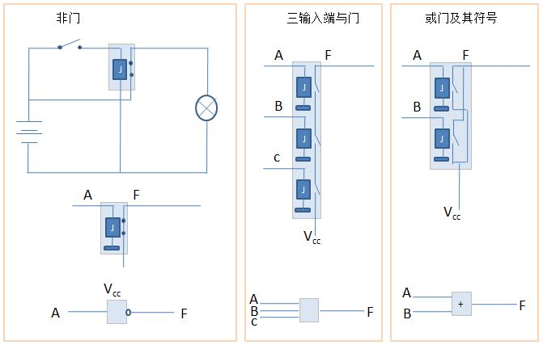
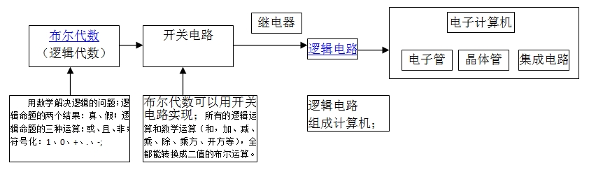

电工电路与电子电路的区别
| 电工电路 | 电子电路 | |
|---|---|---|
| 作为电充当的作用 | 能量或动力 | 信号传输媒介 |
| 以4.9V电压为基准 | 基准之上 | 基准之下 |
| 使用的元件 | 把电变为能量的元件 （如发动机、电热器等） |
电子器 （如二极管、晶体管等） |
| 注：一些电子产品中有时电工电路和电子电路会混合使用。电脑中的风扇系统、硬盘、光驱就是电工电路。 | ||
电生磁：电报，能传递文字的信息（利用继电器和电码表）；
磁生电：电话，话筒：可移动的线圈A+固定的磁体B+纸片或塑料片C，说话时，C震动，从而带动线圈在磁场中运动，产生强弱不同的电流；在接听电话的一方，声音电流经过话筒（具有扬声器或喇叭的功能）的线圈，会产生强弱不同的磁场，而线圈本身就位于一个磁场中，在两个磁场的相互作用下，不是相互吸引就是互相排斥，线圈是可以动的，而磁体却是固定的，它们斗争的结果是线圈带动C随声音电流的变化而不不停地运动，从而使外部的空气也跟着振动，从而我们就听到了声音。
世界上不可能有比二进制更简单的计数方法，二进制除了是一种计数的方法外，还可以表示逻辑的是与非；
布尔代数：数学+逻辑学
利用计算的方法来代替人们思维中的逻辑推理过程，这种想法早在十七世纪就有人提出过。莱布尼茨就曾经设想过能不能创造一种“通用的科学语言”，可以把推理过程象数学一样利用公式来进行计算，从而得出正确的结论。由于当时的社会条件，他的想法并没有实现。但是他的思想却是现代数理逻辑部分内容的萌芽，从这个意义上讲，莱布尼茨可以说是数理逻辑的先驱。
1847年，英国数学家布尔发表了《逻辑的数学分析》，建立了“布尔代数”，并创造一套符号系统，利用符号来表示逻辑中的各种概念。布尔建立了一系列的运算法则，利用代数的方法研究逻辑问题，初步奠定了数理逻辑的基础。
数理逻辑包括哪些内容呢？这里我们先介绍它的两个最基本的也是最重要的组成部分，就是“命题演算”和“谓词演算”。
命题演算是研究关于命题如何通过一些逻辑连接词构成更复杂的命题以及逻辑推理的方法。命题是指具有具体意义的又能判断它是真还是假的句子。
如果我们把命题看作运算的对象，如同代数中的数字、字母或代数式，而把逻辑连接词看作运算符号，就象代数中的“加、减、乘、除”那样，那么由简单命题组成复和命题的过程，就可以当作逻辑运算的过程，也就是命题的演算。
这样的逻辑运算也同代数运算一样具有一定的性质，满足一定的运算规律。例如满足交换律、结合律、分配律，同时也满足逻辑上的同一律、吸收律、双否定律、狄摩根定律、三段论定律等等。利用这些定律，我们可以进行逻辑推理，可以简化复和命题，可以推证两个复合命题是不是等价，也就是它们的真值表是不是完全相同等等。
命题演算的一个具体模型就是逻辑代数。逻辑代数也叫做开关代数，它的基本运算是逻辑加、逻辑乘和逻辑非，也就是命题演算中的“或”、“与”、“非”，运算对象只有两个数 0和 1，相当于命题演算中的“真”和“假”。
逻辑代数的运算特点如同电路分析中的开和关、高电位和低电位、导电和截止等现象完全一样，都只有两种不同的状态，因此，它在电路分析中得到广泛的应用。
利用电子元件（1个或多个继电器）可以组成相当于逻辑加、逻辑乘和逻辑非的门电路，就是逻辑元件。还能把简单的逻辑元件组成各种逻辑网络，这样任何复杂的逻辑关系都可以有逻辑元件经过适当的组合来实现，从而使电子元件具有逻辑判断的功能。因此，在自动控制方面有重要的应用。
谓词演算也叫做命题涵项演算。在谓词演算里，把命题的内部结构分析成具有主词和谓词的逻辑形式，由命题涵项、逻辑连接词和量词构成命题，然后研究这样的命题之间的逻辑推理关系。
命题涵项就是指除了含有常项以外还含有变项的逻辑公式。常项是指一些确定的对象或者确定的属性和关系；变项是指一定范围内的任何一个，这个范围叫做变项的变域。命题涵项和命题演算不同，它无所谓真和假。如果以一定的对象概念代替变项，那么命题涵项就成为真的或假的命题了。
命题涵项加上全称量词或者存在量词，那么它就成为全称命题或者特称命题了。
数理逻辑新近还发展了许多新的分支，如递归论、模型论等。递归论主要研究可计算性的理论，它和计算机的发展和应用有密切的关系。模型论主要是研究形式系统和数学模型之间的关系。
布尔代数是由布尔（G.Boole）于1847年引入，用以研究命题演算的数学理论。后来，美国电气工程师申农指出，可以用布尔代数来研究开关电路及其相关问题。
1854年，George Boole《An Investigation of the laws of thought,on which are founded the mathematical theories of logic and probabilities》，第一次向人们展示了如何用数学解决逻辑的问题；布尔代数简单得不能再简单了，运算的元素只有两个：1、0；或True、False，基本的运算只有“与”(“and”)、”或”(“or”)、”非”(“not”)，全部的运算只用几张真值表就能表达清楚。
开关电路：布尔代数（数学+逻辑学）+电学
用布尔代数来实现开关电路，才使得布尔代数成为数字电路的基础，所有的数学和逻辑运算，加、减、乘、除、乘方、开方等，全都能转换成二值的布尔运算；
1938年香农在MIT获得电气工程硕士学位，硕士论文题目是《A Symbolic Analysis of Relay and Switching Circuits》（继电器与开关电路的符号分析）。当时他已经注意到电话交换电路与布尔代数之间的类似性，即把布尔代数的“真”与“假”和电路系统的“开”与“关”对应起来，并用1和0表示。于是他用布尔代数分析并优化开关电路，这就奠定了数字电路的理论基础。哈佛大学的Howard Gardner教授说，“这可能是本世纪最重要、最著名的一篇硕士论文。”
在布尔代数里，X代表一个命题，x=0表示命题为假，x=1表示命题为真，香农发现，如用x表示一个由继电器和普通开关组成的电路，那么x=0就表示开关合上，x=1就表示开关打开；接着，又阐述了串联电路和并联电路与逻辑学中联言命题和选言命题的一致性；
| Ci-1 | Ai | Bi | Si | Ci |
| 0·0=0 | 0表示一个断开的开关或是整个电路断开的状态 | |||
| 0+0=0 | ·表示串联（且） | |||
| 1·1=1 | +表示并联（或） | |||
| 1+1=1 | 一个闭合的开关和另一个断开的开关不论以什么顺序并联（串联），整个电路都是连通的）断开的； | |||
| 1+0=0+1=1 | ||||
| 1·0=0·1=0 | ||||
| 0·0=0 0+0=0 1·1=1 1+1=1 1+0=0+1=1 1·0=0·1=0 |
0表示一个断开的开关或是整个电路断开的状态； 1表示一个闭合的开关； ·表示串联（且）； +表示并联（或）； 一个闭合的开关和另一个断开的开关不论以什么顺序并联（串联），整个电路都是连通的）断开的； |

全加器英语名称为full-adder，是用门电路实现两个二进制数相加并求出和的组合线路，称为一位全加器。一位全加器可以处理低位进位，并输出本位加法进位。多个一位全加器进行级联可以得到多位全加器。常用二进制四位全加器74LS283。
一位全加器的真值表如下图，其中Ai为被加数，Bi为加数，相邻低位来的进位数为Ci-1，输出本位和为Si。向相邻高位进位数为Ci
| 输入 | 输出 | |||
| A | B | Ci | S | C0 |
| 0 | 0 | 0 | 0 | 0 |
| 0 | 0 | 1 | 1 | 0 |
| 0 | 1 | 0 | 1 | 0 |
| 0 | 1 | 1 | 0 | 1 |
| 1 | 0 | 0 | 1 | 0 |
| 1 | 0 | 1 | 0 | 1 |
| 1 | 1 | 0 | 0 | 1 |
| 1 | 1 | 1 | 1 | 1 |


计算机电路尽管十分复杂，但基本单元却很简单，由或门、与门、非门、与非门、或非门、异或门、同或门等组成。

| 发出一步完成的指令 | 1+1 | 运算器 | |
| 发出需多步完成的指令 | 1+1+1 | 寄存中间结果的 寄存器 |
控制器(带振荡器) |
| 发出多条指令让计算机逐条完成 | A＝1+1+2 B=3+4 C=A+B |
存储器 |
由加法机到全自动加法机
按照冯诺依曼的存储程序概念：
1 写出指令序列；
2 指令序列存储到存储器；
3 控制器（由振荡器、译码器、计数器等组成）按顺序取出每一个指令，并译码后操作；
4 运算器进行运算，并将中间结果存放在寄存器；
用一只开关就可以完成从存储器中依次取出并完成相加的过程

巧妙地安排连线，并预先设计好各种指令所需的操作序列；
在编程时，不在指令中使用立即数，而代之以间接的地址，就不用老是把程序改来改去，或者重新编排，只需要每次把那个地址里换成不同的数字即可。